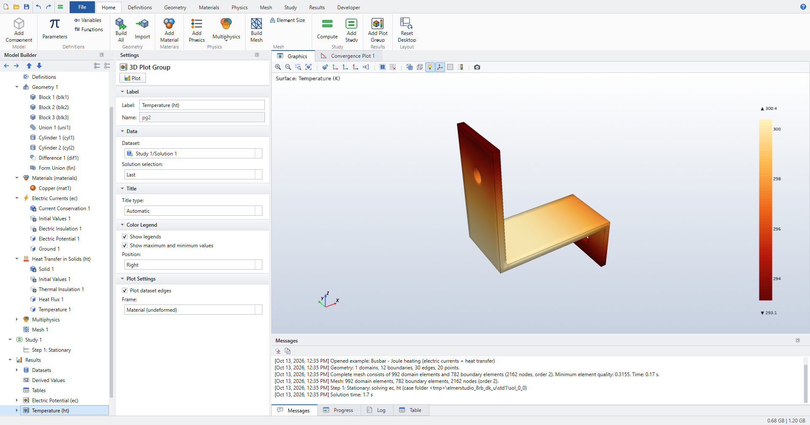

Elmer Studio
Elmer Studio
Build, solve and post-process multiphysics models with the open-source Elmer FEM solver, entirely from a graphical desktop.
You never write an Elmer .sif file, a gmsh script or an ElmerGrid command. Geometry, materials, physics, mesh, studies and results all live in one Model Builder tree, much like COMSOL Multiphysics.

Tutorials

Work planes, fillets, electric currents coupled to heat transfer, and a parametric sweep.

Radiation into open space, exterior fields, radiation patterns and directivity.

Secondary current distribution with electrode kinetics, checked against analytical solutions.
What you can model
| Area | Physics interfaces |
|---|---|
Heat transfer |
Heat Transfer in Solids: conduction, convection by a prescribed or computed velocity, heat sources, convective heat flux, surface-to-ambient radiation. |
Structural mechanics |
Solid Mechanics: stationary and eigenfrequency, plane stress and plane strain, rotating frames, total-force loads, spring foundations. |
AC/DC |
Electrostatics, Electric Currents, Magnetic Fields (2D and 2D axisymmetric). |
Fluid flow |
Laminar Flow, with Stokes flow as an option. |
Acoustics |
Pressure Acoustics, Frequency Domain, with spherical-wave radiation and an exterior field calculation. |
Chemical species and electrochemistry |
Transport of Diluted Species, Secondary Current Distribution with Butler–Volmer, Tafel and user-defined kinetics, and tertiary coupling. |
Mathematics |
|
Multiphysics |
Electromagnetic heating, thermal expansion, nonisothermal flow. |
Every result in the tutorials is checked against a closed-form solution or a published benchmark. See Verification.
How it works
Elmer Studio keeps your model as a tree of nodes, saved as a single .esm file together with its solutions. When you build or compute, it does the following:
-
builds the geometry with the OpenCASCADE kernel of gmsh, numbering domains, boundaries, edges and points by position;
-
meshes it with gmsh and writes a native Elmer mesh;
-
translates materials, physics features and study steps into an Elmer solver input file (
.sif), choosing the Elmer solver modules and their settings; -
runs
ElmerSolver, showing its convergence and log live; -
reads the results back for plots, datasets, integrals and tables.
The .sif is always one click away (), so you can see exactly what Elmer is asked to do. Elmer under the hood explains the translation.
| Elmer Studio is an independent, GPL-licensed project. It is not affiliated with COMSOL AB or with CSC, the developers of Elmer, and it uses no COMSOL assets. COMSOL terminology is used only so that COMSOL users can find their way. |